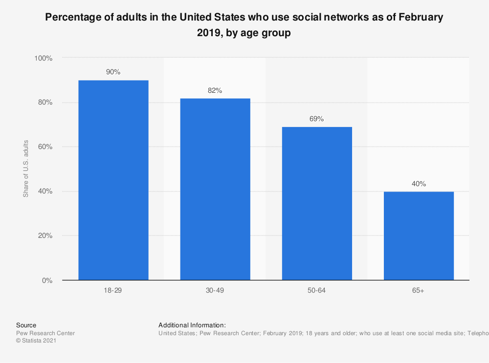

Cross-cultural Ties Through Social Media Platforms
USA
Top 5 Social Media bases on usuage (2020)[1]
- Facebook - 85%
- YouTube - 72%
- Instagram - 53%
- Twitter - 35%
- Pinterest - 34%
The top 5 social media based on usage is similar to Brazil & the United Kingdom in that this list contains Facebook, YouTube, and Instagram. Though, unlike the United Kingdom, both the United States and Brazil contain Twitter and Pinterest in the top 5. The United Kingdom differs in that WhatsApp and Snapchat are used more frequently. The United States and Russia aren’t too different either in that both the top 5 lists contain Instagram and Youtube. However, the top 5 for Russia contains WhatsApp, ВКонтакте, and Telegram which are not social media used heavily within the United States. Across all four countries-usage was high for both Instagram and YouTube.
Demographic Graph[2]
Use of social media by adults (18-65+) in the United States shows that 18-29 year olds are the primary age group that uses social media, while only 40% of adults 65+ use social media [3].
- Sources:
- [2] StatCounter. (February 10, 2021). Leading social media websites in the United States in January 2021, based on share of visits [Graph]. In Statista. Retrieved March 08, 2021.
- [3] Pew Research Center. (June 12, 2019). Percentage of adults in the United States who use social networks as of February 2019, by age group [Graph]. In Statista. Retrieved March 08, 2021.
Popular Memes in the United States

Meme poking fun at the United States using bald eagles to measure distances versus the metric system. Source: Image found on Reddit.

Inaccurate map meme depicting areas of the USA for what it's mainly know for by other countries. Source: Image found on Reddit

Lego doctor meme that critques how absurdly expensive the US Healthcare is. Source: Image found on Reddit.

Bald eagle meme centered around America's obsession with freedom. Source: Image found on Reddit.

Drake hotline bling meme/Drakepost denotes preference to the well-known American song, Yankee Doodle. Source: Image found on Reddit.